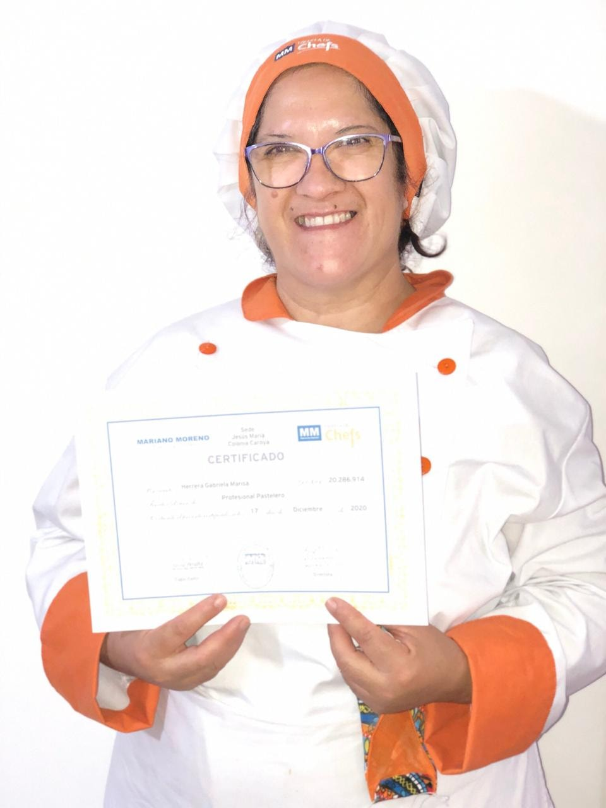

Soy Gaby como todos me conocen y me dedico a la pastelería desde el año 2017. Actualmente, me dedico a la elaboración de productos artesanales, abarcando desde tortas, cupcakes, alfajores, budines y así con una extensa lista de productos, hechos con mucho amor. Me pueden ubicar en todas mis redes sociales y sino se pueden acercar a mi docimilio donde serán abosolutamente bienvenidos.
Para los que me conocen es un rostro familiar y para los que todavía no saben quien, me presento
